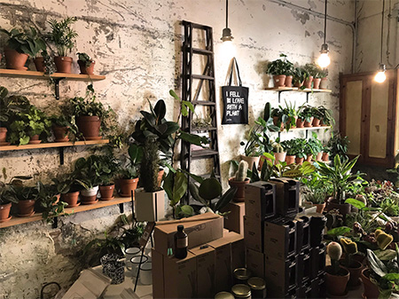
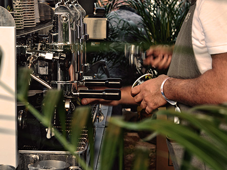

An Oasis of Green
Step into a cozy, nature-filled haven where plants breathe life
into every corner. At Buds & Brews, we offer a calm, earthy
ambiance with a curated selection of vibrant indoor plants to
brighten up your space and spirit. Explore our plant collection
and connect with nature, one leaf at a time.

Coffee with a Green Twist
Our passion for plants is matched only by our love for coffee.
Sip on expertly brewed espresso or savor a handcrafted latte
while surrounded by lush greenery. Our café offers the perfect
balance of vibrant botanicals and rich, aromatic coffee, making
it the ideal spot for coffee enthusiasts who crave a peaceful,
nature-filled setting.